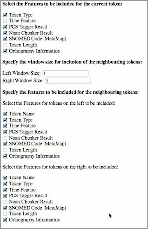

Use the workbench feature library software to build a language model for any of the available CLEW services that uses machine learning.
To train a machine learning model you must identify natural characteristics or "features" for each token. These features include, for example, word length, part-of-speech, and relative location in the sentence.
With the feature library you can readily identify a set of features for each token in a training corpus, a manually annotated set of documents. These identified features and documents are then input into the pipeline. Next, analyze the pipeline output. If the pipeline performed accurately the model is trained and the pipeline is ready for production. Any taggings of the corpus that do not match the manual annotations in the Gold Standard represent a disparity in the process. Go back and adjust the features and repeat the process.
The Feature Library can be used inside LAPPS for a single file or as an external service for a folder of files.
Among these features, we selected and evaluated the performance of different combinations of categories.
The snippet below shows an example of features selected for a particular token using the feature library software.
